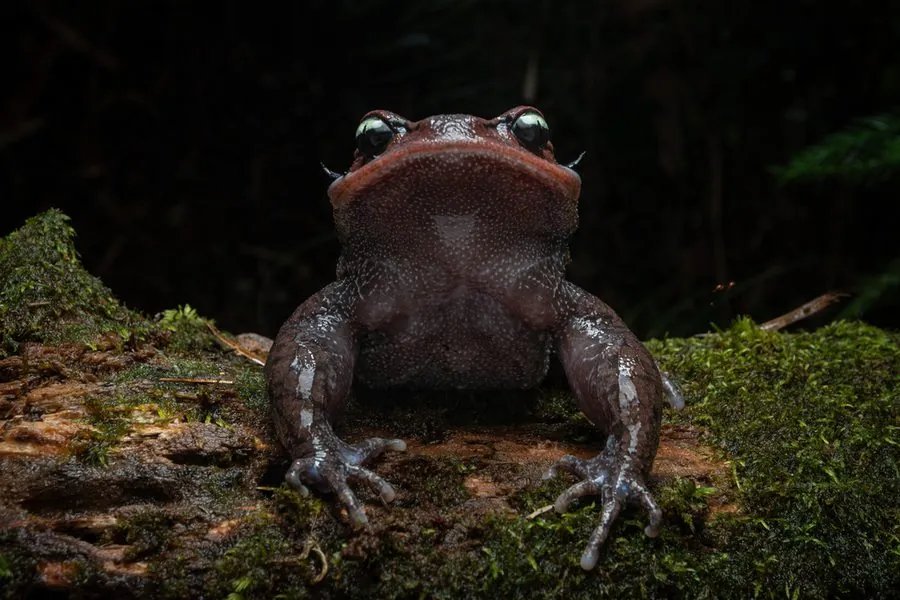

两栖动物 · 动物界
崇安髭蟾 Leptobrachium liui

中国福建、江西等地的髭蟾，雄蟾上唇长出黑色角质刺，像胡须一样，繁殖期在溪流中产卵，被列为易危物种。
- 分类
- 门脊索动物门纲两栖纲目无尾目科角蟾科属髭蟾属
- 栖息环境
- 海拔较高的常绿阔叶林溪流、石缝和潮湿落叶层
- 地理分布
- 中国福建、江西、浙江等地山区
- 保护级别
- IUCN 易危（VU）；中国“三有”保护动物
物种志
崇安髭蟾体长 6–8 厘米，身体矮胖，头部宽大，吻端圆钝，眼睛大而突出；背面呈深褐色、灰褐色或紫褐色，散布深色斑点，腹部颜色较浅，四肢短粗，趾间蹼不发达。雄蟾在上唇边缘长有一排黑色角质刺，繁殖期尤为明显，看上去像长了胡子。
它分布于中国福建、江西、浙江等地的山区，栖息于海拔较高的常绿阔叶林溪流附近，平时藏在石缝、落叶和土洞中，夜间捕食昆虫、蠕虫和螺类。繁殖期在冬季，雄蟾聚集在溪流石缝中鸣叫，雌蟾把卵产在石下，蝌蚪在溪流中生活时间较长，需要一两年才完成变态。崇安髭蟾对森林和溪流环境要求高，栖息地破坏使其数量下降，被列为易危物种，中国将其列入“三有”名录。
形态与习性
- 食性昆虫、蠕虫和螺类
- 体长约 6–8 cm
- 特征雄蟾上唇有黑色角质刺，像胡须
- 繁殖冬季在溪流石下产卵，蝌蚪需一两年变态
- 活动节律夜行性，白天藏在石缝和落叶中
- 保护IUCN 易危，中国“三有”保护动物
趣味知识
- 只有雄蟾上唇会长出黑色角质刺，繁殖期看起来像留着胡子。
- 崇安髭蟾在寒冷的冬季繁殖，蝌蚪要在溪流里生活一两年。
- 它对森林溪流环境要求很高，是山地生态质量的指示物种。